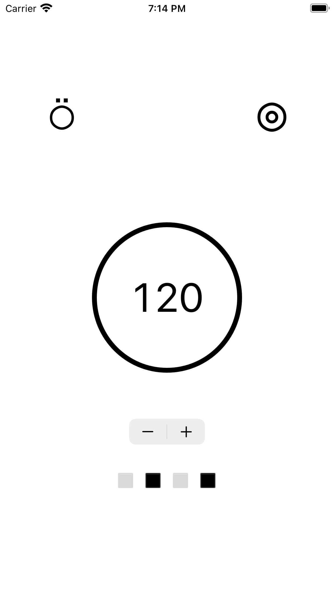
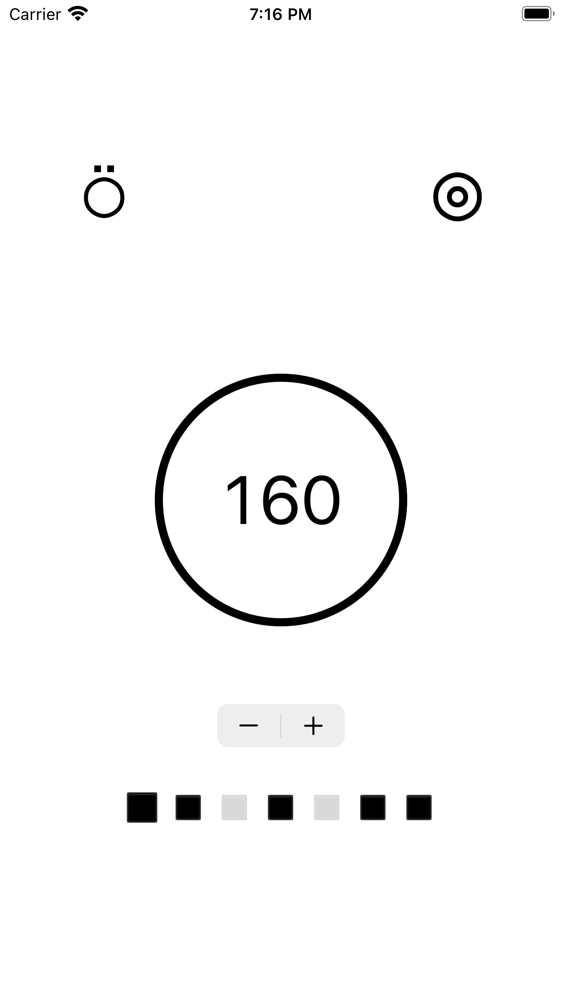

JustMetronome
JustMetronome
If you have any questions regarding this "JustMetronome" app, please email me.
Start the metronome by tapping the circle in the center showing the BPM.

Tap or Swipe up and down the screen to adjust BPM; Use +/- to adjust the number of beats.
Tap into the squares to toggle a beat; Change beat sound using the the upper left knob
